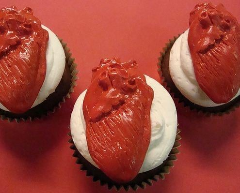

Heart Cookies

Descripiton:
Heart cookies made from human heart.
Ingredients:
- 4-5 human hearts
- 300ml of blood
- 200g flour
Steps:
- Mix the flour with the blood and let it 30 minutes in the fridge
- Clear the hearts on the inside
- Fill them with the mixture
- Put it in the stove for one hour